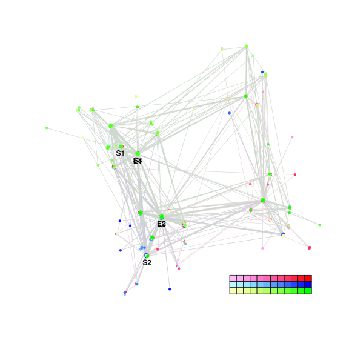
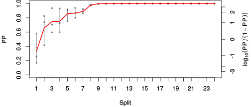
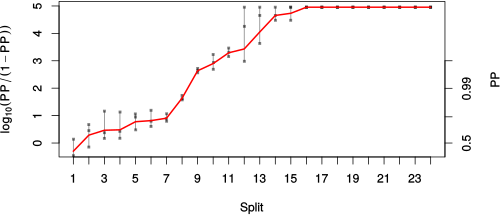

| chain # | burnin | subsample | Iterations (remaining) | command line | subdirectory | directory |
|---|---|---|---|---|---|---|
| 1 | 10000 | 1 | 90000 | bali-phy E1_AA_red3_v2_PerissoArtio_Lambda_Alpha_Manatees_BetaGamma.fas -s 85296 -n PerissoArtio_Lambda_Alpha_Manatees_BetaGamma_c1 | PerissoArtio_Lambda_Alpha_Manatees_BetaGamma_c1-1 | /DATA/work/ONCOGENEVOL/database/trees/Bali-Phy/E1 |
| 2 | 10000 | 1 | 90000 | bali-phy E1_AA_red3_v2_PerissoArtio_Lambda_Alpha_Manatees_BetaGamma.fas -s 74163 -n PerissoArtio_Lambda_Alpha_Manatees_BetaGamma_c2 | PerissoArtio_Lambda_Alpha_Manatees_BetaGamma_c2-1 | /DATA/work/ONCOGENEVOL/database/trees/Bali-Phy/E1 |
| 3 | 10000 | 1 | 90000 | bali-phy E1_AA_red3_v2_PerissoArtio_Lambda_Alpha_Manatees_BetaGamma.fas -s 84625 -n PerissoArtio_Lambda_Alpha_Manatees_BetaGamma_c3 | PerissoArtio_Lambda_Alpha_Manatees_BetaGamma_c3-1 | /DATA/work/ONCOGENEVOL/database/trees/Bali-Phy/E1 |
| P(data|M) = -27243.190 +- 4.428 | Complete sample: 521 topologies | 95% Bayesian credible interval: 85 topologies |

Phylogeny Distribution

| Partition support: Summary |
| Partition support graph: SVG |
| 50% consensus | Newick (+PP) | SVG | |||||
| 66% consensus | Newick (+PP) | SVG | |||||
| 80% consensus | Newick (+PP) | SVG | |||||
| 90% consensus | Newick (+PP) | SVG | |||||
| 95% consensus | Newick (+PP) | SVG | |||||
| 99% consensus | Newick (+PP) | SVG | |||||
| 100% consensus | Newick (+PP) | SVG | |||||
| MAP | Newick (+PP) | SVG | |||||
| greedy | Newick (+PP) | SVG |
{kind=link}
{kind=link}
{kind=link}
{kind=link}
{kind=link}
{kind=link}
{kind=link}
{kind=link}
Alignment Distribution
Partition 1
| Diff | Min. %identity | # Sites | Constant | Informative | ||||
|---|---|---|---|---|---|---|---|---|
| Initial | FASTA | HTML | Diff | 3.51% | 669 | 1 (0.149%) | 659 (98.5%) | |
| Best (WPD) | FASTA | HTML | AU | 28.9% | 1172 | 51 (4.35%) | 597 (50.9%) |


Mixing
| burnin (scalar) | ESS (scalar) | ESS (partition) | ASDSF | MSDSF | PSRF-CI80% | PSRF-RCF |
|---|---|---|---|---|---|---|
| 22715 | 16.02 | 18.435 | 0.050 | 0.217 | 1.085 | 1.059 |
Projection of RF distances for the first 3 chains3D | Variation of split PPs across chains |
Scalar variables
| Statistic | Median | 95% BCI | ACT | ESS | burnin | PSRF-CI80% | PSRF-RCF |
|---|---|---|---|---|---|---|---|
| prior | -2150 | (-2278, -2030) | 6143 | 43 | 3339 | 1.027 | 1.01 |
| prior_A1 | -2241 | (-2367, -2121) | 6320 | 42 | 3339 | 1.029 | 1.011 |
| likelihood | -2.716e+04 | (-2.725e+04, -2.707e+04) | 9076 | 29 | 2257 | 1.042 | 1.024 |
| logp | -2.931e+04 | (-2.939e+04, -2.923e+04) | 514.5 | 524 | 1821 | 1.004 | 0.9978 |
| Heat.beta | 1 | ||||||
| Scale1 | 9.081 | (6.253, 12.54) | 1 | 270003 | 121 | 1 | 1 |
| S1.F.pi.A | 0.07021 | (0.06393, 0.07671) | 67.09 | 4024 | 431 | 1.004 | 1.01 |
| S1.F.pi.R | 0.04618 | (0.04099, 0.05166) | 742.7 | 363 | 441 | 1.011 | 1.009 |
| S1.F.pi.N | 0.03589 | (0.03186, 0.04007) | 14.7 | 18372 | 633 | 1.001 | 1 |
| S1.F.pi.D | 0.05744 | (0.05133, 0.06364) | 72.87 | 3705 | 355 | 1.002 | 0.9993 |
| S1.F.pi.C | 0.05376 | (0.0469, 0.06094) | 8.875 | 30423 | 288 | 1.001 | 1.002 |
| S1.F.pi.Q | 0.04093 | (0.03658, 0.0454) | 15.45 | 17473 | 240 | 1.001 | 1.009 |
| S1.F.pi.E | 0.05466 | (0.04927, 0.06028) | 775.6 | 348 | 674 | 1.012 | 1.009 |
| S1.F.pi.G | 0.08209 | (0.07354, 0.09098) | 388.4 | 695 | 393 | 1.006 | 1.004 |
| S1.F.pi.H | 0.02565 | (0.02198, 0.02941) | 8.29 | 32568 | 362 | 0.9998 | 0.9974 |
| S1.F.pi.I | 0.04229 | (0.03726, 0.04748) | 11.94 | 22621 | 199 | 1 | 0.9931 |
| S1.F.pi.L | 0.09951 | (0.09096, 0.1081) | 11.6 | 23277 | 599 | 1.002 | 1.002 |
| S1.F.pi.K | 0.03917 | (0.03448, 0.04388) | 18.67 | 14465 | 167 | 1.002 | 0.9969 |
| S1.F.pi.M | 0.02041 | (0.0173, 0.02366) | 8.192 | 32959 | 546 | 1 | 1.007 |
| S1.F.pi.F | 0.04842 | (0.04212, 0.05474) | 8.28 | 32608 | 494 | 1.001 | 1.001 |
| S1.F.pi.P | 0.04364 | (0.03759, 0.04976) | 33.21 | 8129 | 357 | 1.001 | 1.001 |
| S1.F.pi.S | 0.07127 | (0.06498, 0.07756) | 799.6 | 337 | 600 | 1.007 | 1.003 |
| S1.F.pi.T | 0.06273 | (0.05684, 0.06846) | 9.082 | 29728 | 140 | 1 | 0.9961 |
| S1.F.pi.W | 0.01048 | (0.007403, 0.0138) | 8.464 | 31901 | 384 | 1 | 1.009 |
| S1.F.pi.Y | 0.0265 | (0.02214, 0.0312) | 9.945 | 27149 | 439 | 1.001 | 0.9995 |
| S1.F.pi.V | 0.06772 | (0.06139, 0.07427) | 23.03 | 11723 | 276 | 1 | 0.9975 |
| I1.RS07.meanIndelLengthMinus1 | 2.698 | (2.191, 3.26) | 6295 | 42 | 622 | 1.035 | 1.016 |
| I1.RS07.logLambda | -3.851 | (-3.998, -3.707) | 291.8 | 925 | 716 | 1.003 | 1.002 |
| |A1| | 1110 | (1049, 1171) | 5634 | 47 | 552 | 1.048 | 1.056 |
| #indels1 | 268 | (251, 285) | 1912 | 141 | 2409 | 0.9706 | 1.007 |
| |indels1| | 998 | (891, 1116) | 1.685e+04 | 16 | 22715 | 1.085 | 1.029 |
| #substs1 | 5157 | (5100, 5209) | 4404 | 61 | 856 | 1.034 | 1.059 |
| Scale1*|T| | 10.48 | (10.15, 10.82) | 26.77 | 10086 | 458 | 0.9999 | 0.9999 |
| |A| | 1110 | (1049, 1171) | 5634 | 47 | 552 | 1.048 | 1.056 |
| #indels | 268 | (251, 285) | 1912 | 141 | 2409 | 0.9706 | 1.007 |
| |indels| | 998 | (891, 1116) | 1.685e+04 | 16 | 22715 | 1.085 | 1.029 |
| #substs | 5157 | (5100, 5209) | 4404 | 61 | 856 | 1.034 | 1.059 |
| |T| | 1.154 | (0.7911, 1.576) | 1 | 270003 | 105 | 0.9996 | 0.9994 |